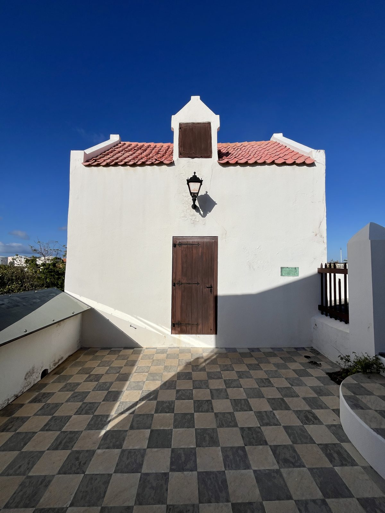
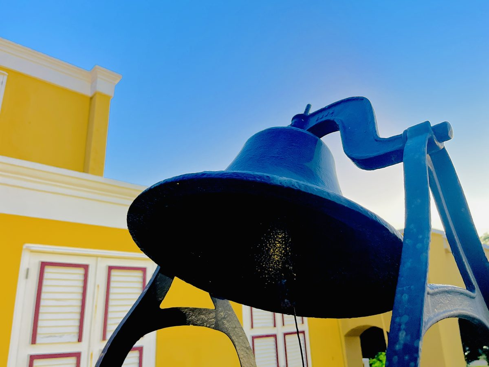
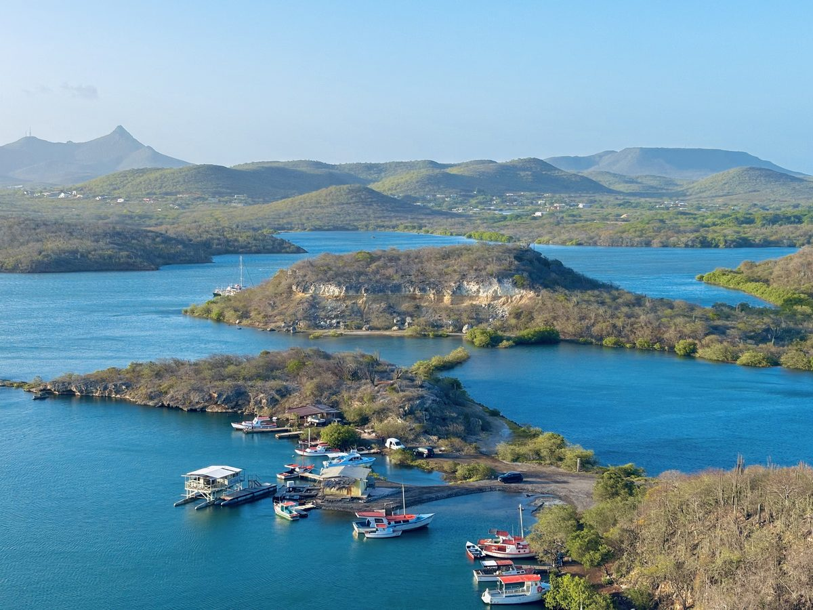
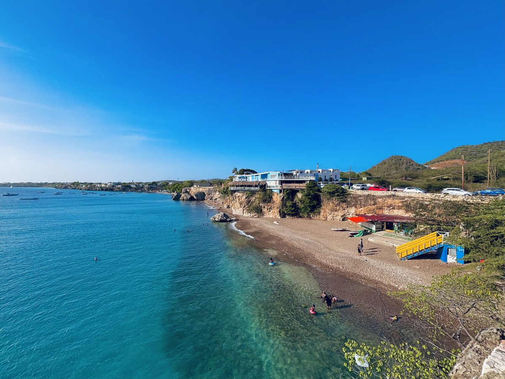

Itinerario de ejemplo · 7 días
Una semana en la Curaçao judía
Una muestra de cómo transcurre una semana. Cada viaje se adapta a tu grupo, a tu ritmo y al calendario. Esto es solo un punto de partida.
Llegada y el malecón
Recepción en el aeropuerto y traslado a tu hotel cerca de la ciudad antigua. Un paseo al atardecer por el Handelskade mientras las fachadas pastel se iluminan sobre el agua.
La sinagoga de suelo de arena
Una mañana privada en Mikvé Israel-Emanuel, con su suelo cubierto de arena desde 1732, seguida del recién ampliado Museo Judío de Curaçao.
Beth Haim y la historia sefardí
El cementerio centenario de Beth Haim y tiempo de archivo con un historiador de la comunidad para quienes rastrean su linaje familiar.

La comunidad viva
Encuentros de persona a persona: conversaciones con miembros de la comunidad y un almuerzo kosher en la tradición sefardí.

Isla y descanso
Un día más pausado: la costa, los mercados y tiempo para descansar antes del Shabat.

Shabat junto al mar
Kabalat Shabat con la congregación y una cena de Shabat como anfitriones mientras la luz se apaga sobre el puerto.

Despedida
Una mañana sin prisas y traslado privado al aeropuerto, partiendo como familia y no como visitantes.